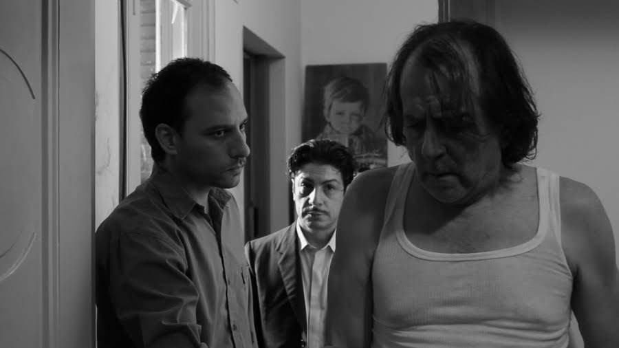
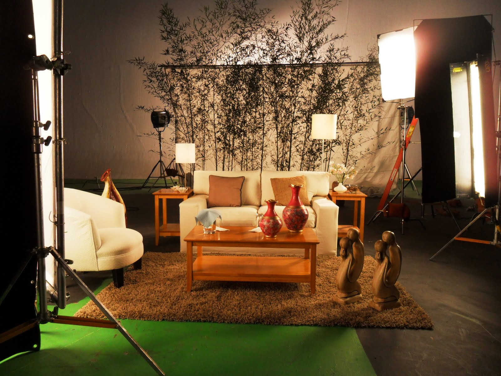
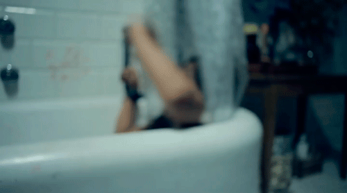

No eres los otros, teatro

Dirección: Eva Soibelzhon. Libro y actuación:Felix Torre. Escenografía y vestuario: Victoria Pugliese.
Escenografía 90% hecha en papel
El piso era un damero hecho con muchas capas de papel que el actor iba arrancando. Cada función la escenografía se rompía y se volvía a armar para la seguiente.
La obra fue itinerando y seguimos investigando, adaptando y resignificando la escenografía. Centro CUltural Borges. Bs As.
Armonía del caos, largometraje
Ópera prima de Mauro López. Actuación: Sergio Pángaro, Lorenzo Quinteros entre otros. Asistencia en arte y diseño de vestuario: Victoria Pugliese. 2011

Qué placer hacer esta peli!Cuando no hay egos y cada uno da lo mejor de sí.

Filmada en Buenos Aires en una semana, bella locura.
Las rosales casa de novias, teatro

Dirección Celina Andaló. Diseño estético: Victoria Pugliese
México
Viví un año en Ciudad de México donde trabajé en diversas publicidades como asistente de arte
ABC of death, Cortometraje/México
Tuve la oportunidad de filmar este cortometraje de Jorge Michel Grau asistiendo a Alejandro García en arte.